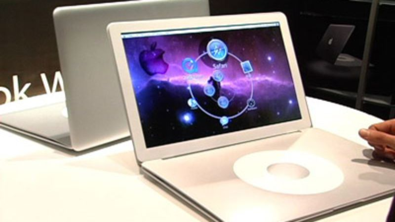
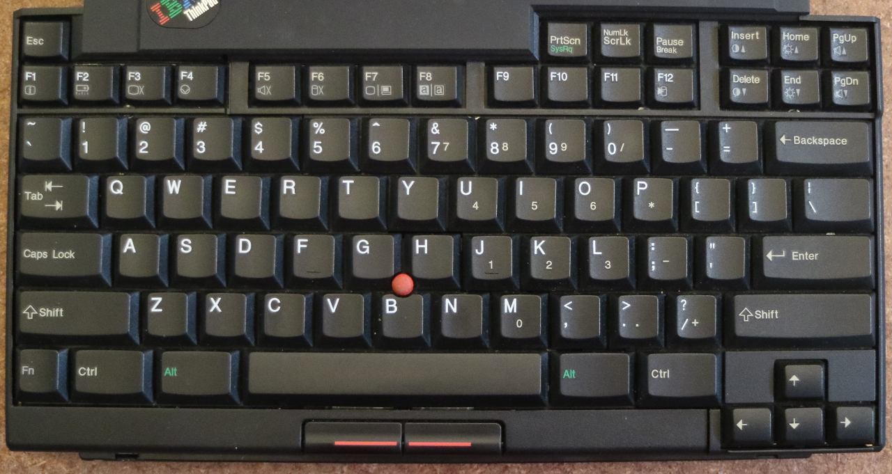
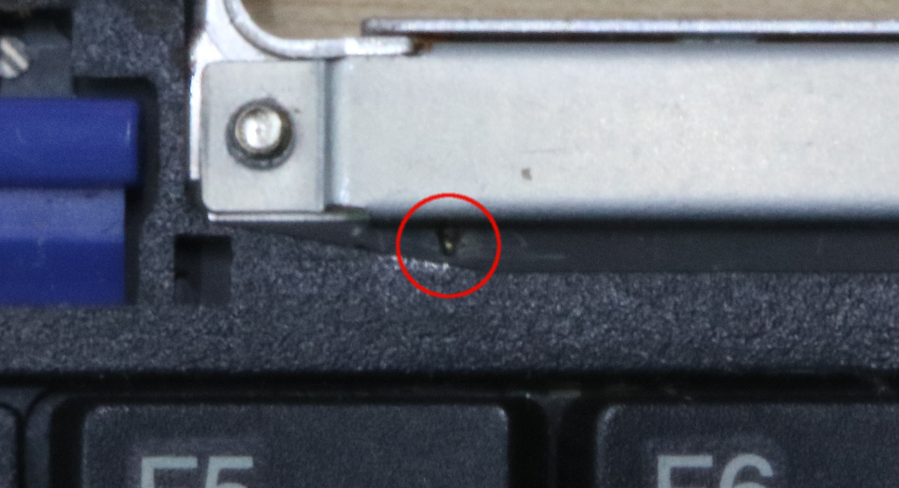
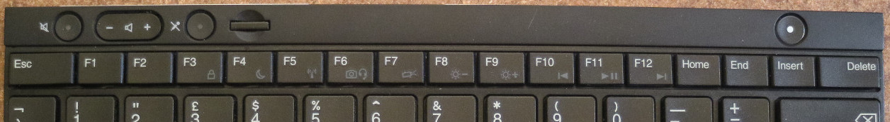
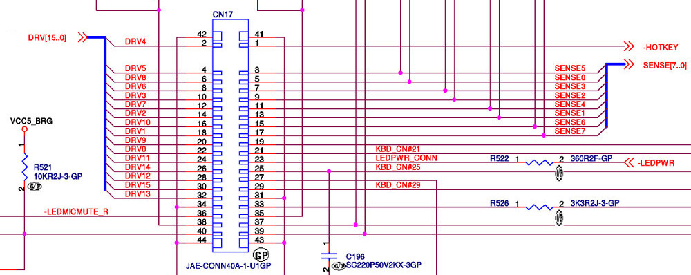
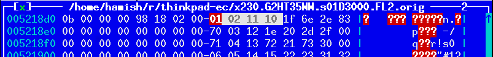
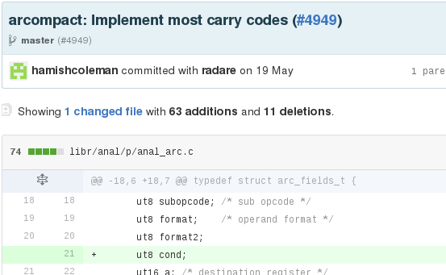

class: center, middle <!-- * Introduction --> # My fight with modern laptops LCA2017 .footnote[Hamish Coleman - hamish@zot.org] ??? - questions, please raise your hand and I will stop shortly - slides available, etc - I'll show any urls again at the end, too FIXME - put the talk name as a header on all slides?? --- <!-- ** Who am I --> # Who am I - Systems Programmer by trade - Pull apart hardware as a hobby - Just a grumpy guy, annoyed by change - ... but I want be 'constructive' about it ??? - The description says I live in Melbourne, but these days I live in a small box in Hong Kong - I dont work for Lenovo (or IBM) - I never have - I was just a fan of their hardware - You might call it Dev Ops these days I've been calling it Sys Admin for years - Dissassembling things, finding out how things work, this is all part of the same thing for me. - Sometimes I even put them back together - it seems this is the room for grumpy old men who dont like their laptops this morning.. --- class: center, middle  <div class="caption">https://xkcd.com/1770/</div> ??? - Of course, there is an XKCD for this - .. But - concerned about the pattern that the computer/design industry is taking (cheapening and mass-producing/lowest-common-denominatoring) NOTE: be aware of the timing needed to read the comic - say min 20sec --- <!-- ** What is in this talk --> # This talk - What is wrong with current Laptops? - Investigate the hardware, how much can I change it? - Reversing firmware tables - Can I make the flash tool work from Linux? ??? TODO: these set of notes dont give me hints on what to say (yet) - There are four main points that I think I can get across - Not too much time on what is wrong with the laptops - Encourage people to be able to make changes to the hardware around them - get people back into the mentality of questioning their 'perfect', 'shiny' new toys - "what can I change??" - Actually changing/fixing the firmware -- radare patches -- trying to hit the target audience for your project -- *SPOILER* - No - What can we do next? ??? TODO: these set of notes dont give me hints on what to say (yet) - Going further with exploration and possible exploitation -- Write a KVM-based hypervisor - What Next FIXME - another idea from audrey --- <!-- ** Why did I do it (what motivated me) --> # Why did I start my fight? - Today's hardware is just not for me - To be fair, I'm a small group - Is it new features at the *expense* of old ones? - You should feel like you *could* do something about it ??? - Increasingly, hardware doesnt seem to meet my requirements - evolution of hardware - beyond a certain point smaller is not always better (thinner means less room for ports and less keyboard travel) - I certainly dont want cheaper at the cost of quality - touch on open source, helping making changes - There is a constant and growing feeling that none of the designs are catering for my needs and wants. This could be because I am old and crusty, but the point is that I dont like feeling that way. I assume that others have had the same feeling and want to encourage you in doing things about it. - Note, I say *could* - I dont expect everyone to want to, or to succeed. - could do a quick room survey and note the number of thinkpads diminishing over the years --- <!-- *** laptop evolution --> # Laptop evolution - Keep getting smaller - this is good - At the expense of ports, durability, keys - this is bad <table> <tr> <td width=345> <td width=345> <td>  <div class="caption">The future?</div> </table> ??? - Historically, I have just looked at the Thinkpad laptops - Looking at other ranges, I see many of the same things - starting sooner, perhaps - Smaller means a lot of things, many of which I can cope with - sometimes smaller just means less room for the battery - which is bad --- <!-- **** my laptop opinions. computers: travel, workstation, other. --> # My ideal laptop - easily portable - suitable for all-day use - (all-day battery would be nice) - Runs Linux - No blobs - Actually is a laptop - Durable ??? - FIXME I had some idea to talk about the three use cases I saw for laptops - Portability speaks to the maximum size - not a portable gaming rig and certainly not large enough to fit a numberpad! - all-day use is about erganomics, which - amungst other things - relates to screen quality and since I will be typing all day - the keyboard - Beyond (say) 4 hours, battery life is more something nice to have, with the assumption that if I am working all day, I am at probably near a power point for some of that time. Of course, it has to reliably hit the 4 hour mark. - runs linux, should be obvious - Even the Purism people have blobs that they were not able to remove from their laptops (eg: M.E. blob) - And the Novena isnt actually a laptop - mention pi-top? - durable - survives being used as a laptop - I have had a number of laptops that hit almost all of that (over the years), all from the thinkpad lineup - which is why I kept looking at that range. - note that price is not on that list - maybe can mention the chromebook here, too - as an exception to the pricepoint (if so, be sure to debian "not chromeos") --- <!-- *** scope - reducing it make it possible for me --> # Scope - Washing list of changes I want - Skills to do only one or two things - Look at my needs and focus on the important things - What could I do about the Keyboard on newer laptops? ??? - So, now that I have a list of things I dont like, what can I do - I'm not bunnie or purism - I cannot build a whole laptop - so, reduce the scope to the minimum feature set - all the modern laptops I looked at have keyboards I dont want - Could I do something about that? --- <!-- *** keyboard - show evolution of thinkpad keyboard - one slide with every keyboard I can find - up to x220 - 701c, 600x, r40, z61m x30, x61t, x220 --> # Thinkpad Keyboards - "classic" <table> <tr> <td>  <div class="caption">701c (1995)</div> <td> <div class="caption">600e (1998)</div> <td> <img width=345 src="thinkpad_2002_x30_kb.jpg" /> <div class="caption">x30 (2002)</div> <tr> <td> <img width=345 src="thinkpad_2006_z61m.jpg" /> <div class="caption">z61m (2006)</div> <td> <img width=345 src="thinkpad_2007_x61_kb.jpg" /> <div class="caption">x61 (2007)</div> <td> <img width=345 src="thinkpad_2011_x220_kb.jpg" /> <div class="caption">x220 (2011)</div> </table> ??? - I like to type, I do it all day - Touch-typing is a muscle memory - Yes, there are differences with all these, but relatively small ones - mention what I think the key features are FIXME - note the wedge shaped "non-island" keys, and the high travel --- <!-- - one slide with every keyboard x230 and newer --> # Thinkpad Keyboards - "modern" <table> <tr> <td> <img width=345 src="thinkpad_2012_x230_kb.jpg"> <div class="caption">x230 (2012)</div> <td> <img width=345 src="thinkpad_2013_x240_kb.jpg"> <div class="caption">x240 (2013)</div> <td> <img width=345 src="thinkpad_2014_x1g2.jpg"> <div class="caption">x1 gen2 (2014)</div> <tr> <td> <img width=345 src="thinkpad_2015_x250.jpg"> <div class="caption">x250 (2015)</div> <td> <img width=345 src="thinkpad_2015_x1g3.jpg"> <div class="caption">x1 gen3 (2015)</div> <td> <img width=345 src="thinkpad_2016_x260.jpg"> <div class="caption">x260 (2016)</div> </table> ??? - Changing keyboards is going to happen, but I need to use many - Dont remove keys! - note the x240, x250 and x260 are apparently physically interchangable - point out the x1 g2 as presaging the new mac keyboard by a couple of years --- # Some 'strange' design FIXME - zoom in on the x1 gen2 Home/End key ??? - point out the other bonkers keys on the x1 g2 --- <!-- - final slide holding x220 and x230 side-by-side --> # Keyboards - old and new <table> <tr> <td> <img width=517 src="thinkpad_2011_x220_kb.jpg"> <div class="caption">Thinkpad x220</div> - FIXME Pro list <td> <img width=517 src="thinkpad_2012_x230_kb.jpg"> <div class="caption">Thinkpad x230</div> - FIXME Con list </table> ??? - The newest "classic" keyboard vs the oldest "modern" one - The laptop I wanted to replace is the x220 on the left --- <!-- *** assisted by physical compatibility and ease of replacement --> # Replacing the x230 keyboard - Keyboard Connector just works... <table> <tr> <td> <img width=517 src="keyboard_conn1.jpg"> <div class="caption">x220 Keyboard</div> <td> <div class="caption">x230 Motherboard</div> </table> ??? - So similar that you can just plug it in.. except for a couple of issue --- # Replacing the x230 keyboard - but.. Backlight and Burnouts ??? - I didnt notice this until much later - all the keyboards I tried this with had had the same thing happen - it turns out that there is a slightly different pinout, and they sent the high current backlight though the connector. - Someone else pointed this out - The Schematics I have are unclear --- class: center, middle  Not easy to see.. ??? - I didnt believe them until I found this small mark - Apparently, I was lucky - other people have had the burnout break the mouse buttons - There is a insulating tape hack that can be applied to stop this from happening --- # Replacing the x230 keyboard - Many of the top-row keys dont work - The Fn-Combos didnt match the icons <table> <tr> <td> <div class="caption">x220</div> <tr> <td>  <div class="caption">x230</div> </table> ??? TODO - So, connectors and burnouts delt with, can I just use the keyboard? no.. - Seven-row vs Six-row keyboard - On the x220 keyboard,.. - - Dead Keys: Insert, Home, Pause, PrtSc, ScrLk - - Wrong Keys: Del, PgUp, PgDn, Win-R, Pg-back, Pg-fwd - Fn-Combos that were not matching the icons - - Multimedia keys, Brightness, Thinklight - - Hibernate, Capslock, Screenlock, Battery - seems a bit half-arsed, really TODO - replace the x230 keyboard image with a better one --- # Replacing the x230 keyboard - Others have solved this... .center.middle[] <div class=caption>http://forum.thinkpads.com/viewtopic.php?f=69&t=104889#p718202</div> ??? - hardware hacking is possible, if somewhat error prone and laborious --- <!-- * first steps --> # Its all just software... - Schematics show all the dead keys are actually connected  ??? - Its a different Embedded controller on the two models, but the key matrix has keys in every row and column, so they all must be wired up. - the Schematics agree --- <!-- ** download firmware , look for tables , hexdump/search/existing research --> # ... but software sucks <ul> <li><p>Dissassembled firmware from 10 years ago exists (http://ec.gnost.info/) <li><p>This can be used as a partial oracle </ul> .center[ <div class="caption">T43 ec.s (viewed in less)</div> <img width=750 src="firmware_hd_x220.png"> <div class="caption">x220 EC firmware (viewed in HT Editor)</div>  <div class="caption">x230 EC firmware (viewed in HT Editor)</div> ] ??? - If this was open source, I'd just update the code - Found this assembly dump quite some time ago - - It is for T4x and R5x laptops (T43 was from 2005) - I can use the T43 dump as an Oracle to make predictions about what the key table might look like in the X220 and X230 - Match the keyboard master tables, and some other small bits - Allows the beginnings of a firmware patch - However, the x230 firmware doesnt look 'sane' (E.G: The Jump Tables are wierd) - Still have no way to install my patch --- <!-- * breakthrough --> # Breakthrough in EC firmware - Matthew Chapman blogs about Battery Hacking (See the talk before this one :-) His mec-tools software: - works with Thinkpad x230 EC Firmware - decrypt/encrypts - recalculates the checksums ??? - compliment Matthew on his talk, thank him for his software - mention anything from his talk that seems relevant - Assuming you missed his talk, he worked out how to decrypt his thinkpad Embedded Controller firmware, patch it, re-encrypt it and add the right checksums to let it be successfully flashed - with mec tools, we can patch and successfully flash the new version - If zmatt's talk didnt exist, I would have explained how the lenovo firmware encryption worked at this point - FIXME - example of open source community, he did something, I can use it to do something different and bigger (standing on the shoulders of giants..) --- <!-- ** radare2 --> # More Reverse Engineering - Simply patching keyLocTab doesnt fully work - The Radare2 tool had support for the ARCompact instruction set .center[ <div class="caption">firmware excerpt - before fixing Radare2</div> ] ??? - With the ability to now patch the EC, I could try out simply updating the keysym table I found with the olf T43 firware. - That had some success, remapping working keys. The dead keys didnt come back to life though - Searched around for something that supported the right CPU, found Radare2 - Its got a bit of a learning curve... - This screenshot might not make sense to you, but I tell you that it doesnt make sense to me either - Radare didnt actually support the ARC cpu very well. --- <!-- ** improving the radare analysis --> # Radare needed improvement - Radare2 ARC support actually quite flakey - E.G: scrolling backwards ended up going forwards! - Worse, the ARCompact support appeared to be half missing - Big endian only, no jump delay slot, jumps targets all wrong, no illegal instruction detection .right[] ??? - FIXME clarify or reduce the above - In order to successfully dig into the firmware, I need to improve the tools - some may call this yak shaving - This is part of what I am trying to encourage - there was a problem with the tool, I fixed the tool - maybe mention NUXI format used by the little endian instruction coding - Even with all that mentioned, there are still a lot of things missing from this architecture in radare - I did not implement all the radare features in this plugin - not by a long shot (some conditional branching, all "ESIL" stuff, stack frames and more - I'm sure) - (also following the theme of picking up open source and improving it.) --- # Improvements helped - Plenty of features still to add - Improved enough that analysis was usable .center[ <div class="caption">same excerpt - after Radare2 fixes</div> ] ??? FIXME - add more? - with better analysis, can go back to looking for more structures - Remember, this is trying to get better analysis to fix the keyboard - Note that much of the reverse engineering was code analysis as I looked for things like the capslock GPIO or the interface to the main CPU --- # Finished Yak-shaving.. - before I was distracted with making tools better FIXME - add the radare screenshots? ??? Have digressed from my main points, so try to bring people back - yak shaving to fix all the radare stuff and the encryption stuff - now back to looking for the keyboard structures FIXME - add more? --- <!-- ** looking for structures --> # Looking for structures - EC Firmware has a large data section - Data turns out to be a large number of lists of lists .center[] ??? - Now that I have shown you some basic radare data tools, we can get back to finding the keyboard patches - no code beyond table.00020edc FIXME - staring at the data - seeing things that looked like pointers - following the pointers and seeing that they pointed at things - Size often added, but "element size", not byte size TODO - above feels unclear --- <!-- ** colaboration --> # Collaboration - Connect with Nitrocaster - points me at the 'live key bitmap' - Together, we find the structure for "both" kinds of Fn+Combo key maps .center[] ??? - Nitrocaster found me via the mec-tools blog posts and the Novena forum - the Dead keys were missing a "1" in the live_key_map bitmap - There were two other structures - "Simple" replacements - "Complex" calls to functions - I have written some Docs on the tables we found in the thinkpad-ec repo FIXME - add more here --- .center[] ??? - Data Structures Excerpt - Have culled the full diagram to just those things falling out of the "keyboard" master table --- # Success FIXME - this is where I did my happy dance because I was a grumpy old man who defeated the universe FIXME - add a photo of a x230 + x220 kb (or a photo of successkid?) --- <!-- ** initial publish --> # Initial publish - Nitrocaster starts a thread on the thinkpads.com forums - We try to explain what we have - People are not really following ??? FIXME - add notes - add more to this slide? - add links --- <!-- * polishing (the thinkpad-ec project) --> # Polishing (the project) - Collect all the patches into a repo - Start writing installation documentation - Discover what my audience actually is - Re-write the install docs - Try to make the process as streamlined as possible FIXME - add a github screenshot? ??? FIXME - add notes "This can be a common plague of free software: alienating people through documentation that doesn't relate to those with less knowledge and experience" https://hackaday.com/2016/12/16/installing-libreboot/ <!-- ** audience (the people who wanted to try to use that project) --> --- <!-- ** issues with distribution --> # Issues with distribution - What is the copyright on the firmware? - Just how much can I copy out without issues? - How to make it easy, without infringing? - What tools are even available? - on Windows? ??? - not my binaries, not allowed to distribute FIXME - add more notes --- <!-- ** supporting more hardware --> # Supporting more hardware - Originally, just expected x230 - Forum requests kept on appearing (Everyone has their own pet model) - In the end, support 7 different models (all of the xx30 series) - Repo structure was assuming just one FIXME - could add screenshot from forum "hey can you add support for blah" ??? FIXME - add notes - Could support more, but the low-hanging-fruit was everything from the same series as the x230 laptop - the "xx30" series. I think I ended up supporting every single one from that series... (not intentionally missing one) --- <!-- ** Lenovo tools --> <!-- * How does flashing work --> # Lenovo tools - Lenovo has a Windows tool, I didn't look at it - Bootable CD contains "dosflash.exe" - Boot to PC-DOS, no drivers, clean config - Runs dosflash - loads firmware, *magic happens* FIXME - add a screenshot of the lenovo tool? ??? FIXME - add notes --- <!-- ** reversing dosflash --> # Reversing dosflash - Need to have a DOS strace tool - Look at binary, djgpp CWSDPMI - Have source for djgpp - can unpack the flat 32bit bin - Still no tracing, though ??? FIXME - add notes - mention my old dos tracer - TODO link to lwn - djgpp? --- <!-- *** writing a simple kvm hypervisor --> # My kvm hypervisor - "Using the KVM API" - https://lwn.net/Articles/658511/ - CWSDPMI interrupt calls - DOS interrupt calls - BIOS interrupt calls - Ralf Brown Interrupt List - still the best resource ??? FIXME - add notes - the Interrupt List has been a resource for a /long/ time TODO - add a screenshot? FIXME - make it clear that creating a KVM hypervisor is straight forward --- <!-- *** itterating on implementing missing features --> # iterating on implementing missing features FIXME - Trace DOSFLASH.EXE - Add missing featues (ACPI..) - Find the SMI - Document Protocol FIXME - add screenshot of heaps of trace output ??? - Once the basic stuff is up and running, can use the tracing and debug output to show me what the dosflash.exe is doing - Wrote a minimal 'fake' ACPI bios that passes all the tests that DOSFLASH.EXE does - Once that was right, could find the SMI calls - Briefly explain SMI - Try to document the protocol - Mention that this is so far a dead end. --- <!-- ** writing a device driver for real hardware --> # device driver for real hardware FIXME - title - Progress stalled - need a kernel driver and real hardware (dangerous) FIXME - add screenshot from protocol trace SMI ??? - the emulation is at the point where it needs some answer from the hardware that I am just not giving it - So, to get past this, I need to replay some of the protocol on real hardware - Have seen the abort sequence, so just need to be careful - Needs a kernel driver, because 32bit access (64bit in some places) and direct physical mappings needed. (Also, I didnt really want to go back to writinf DOS programs) FIXME - add notes --- <!-- ** how is the firmware protected? is this a risk --> # how is the firmware protected? - x220, x230 - parts encrypted - x250 - better layout, looks similar encryption - x260 - no encryption, probably a signature ??? - x220 EC uses a different CPU and different encryption keys - x250 has done away with a lot of padding in their flash file - x260 has what appears to be a 256bute signature in the file - thus affording better protection than any of the other ones. --- <!-- * next steps --> # Next Steps - Continue tracing SMI - Build a USB keyboard adaptor - Try to get newer hardware - Look for alternative laptops (open?) ??? - I would like to continue discovering how the DOSFLASH tool works. This would need the change of tools - A partially finished USB keyboard circuit exists, which would allow me to try and retrofit any other hardware with this laptop - With newer hardware, I could take measurements for cutting the case apart and attempt other invasive actions to force a new keyboard into it - Still want a newer laptop.. - Keeping my eyes open for alternatives that fix other issues, might allow me to feel less forced into the laptop replacement - Can mention chrombook+debian and/or cheap intel-based tablets. <!-- ** Still want a newer laptop, dont want to spend money without keyboard --> <!-- ** build a usb adaptor for the raw keyboard --> --- # FIXME - what do you want to do ??? TODO: - encourage people to discuss what they want to change on their laptop - ask audrey for more ideas if needed on this slide :-) --- # FIN - this talk: - github: - https://github.com/hamishcoleman - thinkpad-ec, thinkpad-dosflash, thinkpad-talk - http://forum.thinkpads.com/viewtopic.php?f=69&t=104889#p718202 - http://ec.gnost.info/ - https://lwn.net/Articles/658511/ - https://www.cs.cmu.edu/~ralf/files.html - mec tools FIXME - forum.thinkpads.com publish FIXME - add lots of URLs here FIXME - Tools summary <!-- things from abstract not specifically mentioned above: * various lenovo/thinkpad methods for protecting flash updates reference material: * https://hackaday.com/2016/10/28/apple-sucks-now-heres-a-thinkpad-buyers-guide/ * obviously the new macbook pro * x62 (replacement M/B for x61) http://forum.51nb.com/forum-x62-1.html * t92 (vaporware 'classic' laptop from lenovo) --> <!-- End slides. -->